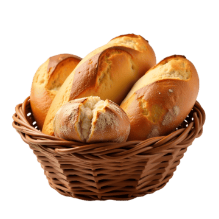

04h30
Horário em que o primeiro pão sai do forno, todos os dias sem exceção.
A Trigo & Sal começou numa cozinha de 12 metros quadrados, com uma massa-mãe emprestada de uma vizinha e um forno doméstico que aguentava seis pães por vez. Hoje o forno é outro, mas a massa-mãe é a mesma — alimentada todos os dias, sem interrupção, desde o primeiro fermento.
Trabalhamos com produtores de farinha de pequena escala do interior, trocamos o fermento biológico pelo natural em 2020 e nunca mais voltamos atrás. O pão fica pronto quando fica pronto — não quando a agenda pede.
